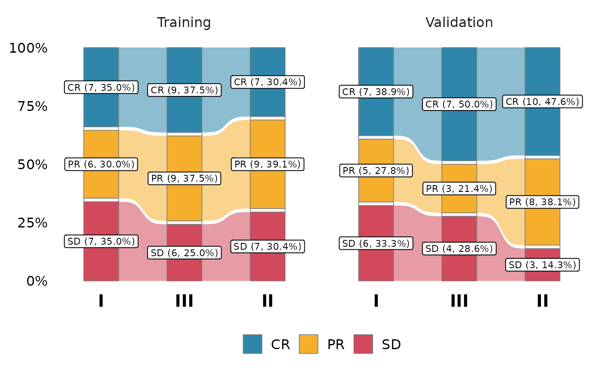

Draw an alluvial plot for the distribution of group across the categories
of cat_var. Transparent strata create visible gaps between groups, and an
optional facet is normalized independently.
Usage
plt_alluvial(
data,
cat_var,
group,
facet = NULL,
y_type = c("percent", "count"),
color = pal_lancet,
flow_args = list(alpha = 0.4, curve_type = "linear"),
stratum_args = list(width = 0.5, color = "gray50", linewidth = 0.3, gap = 0.01),
label_args = list(style = "count_percent", min_pct = 0, size = 3, color = "black", box
= TRUE, fill = "white", alpha = 1),
facet_args = list(nrow = NULL, ncol = NULL, scales = "fixed"),
legend_args = list(ncol = 1, position = "right"),
theme_use = theme_alluvia(15),
save = list()
)Arguments
- data
A data frame.
- cat_var
A single column name defining the horizontal categories.
- group
A single column name defining strata, flows, and fill colours.
- facet
An optional single column name used with
ggplot2::facet_wrap().- y_type
Display within-category percentages or raw counts.
- color
A registered UtilsR palette name, a single colour, or a colour vector. See the internal
.resolve_color()resolver.- flow_args
A named list controlling the alluvial flows:
alphaNumeric scalar in \([0, 1]\). Opacity of the flow ribbons;
0is fully transparent and1is fully opaque. Default0.4.curve_typeCharacter scalar selecting the ribbon curve. Supported values are
"linear","cubic","quintic","sine","arctangent","sigmoid", and"xspline". Default"linear".
- stratum_args
A named list controlling stratum bars and gaps:
widthNumeric scalar in \((0, 1]\). Horizontal width of stratum bars and their flow endpoints relative to adjacent x-axis positions. Default
0.5.colorCharacter scalar giving the stratum border colour. Default
"gray50".linewidthNon-negative numeric scalar giving the stratum border line width. Default
0.3.gapNon-negative numeric scalar controlling the transparent space inserted between adjacent groups. In percent mode it is the fraction of total panel height used by each gap; the total gap must be less than
1. In count mode it is multiplied by the largest category total in each facet. Default0.01.
- label_args
A named list controlling labels:
styleCharacter scalar selecting label content:
"count_percent"givesname (count, percent),"count"givesname (count),"percent"givesname percent,"name"gives the group name, and"none"hides labels. Default"count_percent".min_pctNumeric scalar in \([0, 1]\). Labels are shown only for groups at or above this within-
facetbycat_varproportion. Default0.sizePositive numeric scalar giving the ggplot2 text size. Default
3.colorCharacter scalar giving the label text colour. Default
"black".boxLogical scalar.
TRUEuses boxed labels andFALSEuses plain text. DefaultTRUE.fillCharacter scalar giving the boxed-label background colour; used only when
box = TRUE. Default"white".alphaNumeric scalar in \([0, 1]\) controlling label opacity. Default
1.
- facet_args
A named list controlling
ggplot2::facet_wrap():nrowNULLor a positive integer giving the number of facet rows. DefaultNULL.ncolNULLor a positive integer giving the number of facet columns. DefaultNULL.scalesCharacter scalar controlling scale sharing:
"fixed","free","free_x", or"free_y". Default"fixed".
- legend_args
A named list controlling the fill legend:
ncolPositive integer giving the number of legend columns. Default
1.positionCharacter scalar giving the legend position:
"right","left","top","bottom", or"none". Default"right".
- theme_use
A ggplot2 theme specification resolved internally by
.resolve_theme().- save
NULL, an empty list, or a named list forwarded toRegR::save_plt(). Allowed fields arefilename,width, andheight.
Details
With y_type = "percent", real strata are normalized within each
facet by cat_var combination before the requested gap space is inserted.
With y_type = "count", gaps are scaled by the largest category total in
each facet. Rows with missing values in required columns are removed with an
informational message.
Examples
if (requireNamespace("ggalluvial", quietly = TRUE)) {
set.seed(1)
alluvial_example <- data.frame(
stage = sample(c("I", "II", "III"), 120, TRUE),
response = sample(c("CR", "PR", "SD"), 120, TRUE),
cohort = sample(c("Training", "Validation"), 120, TRUE)
)
plt_alluvial(alluvial_example, "stage", "response")
plt_alluvial(
alluvial_example,
"stage",
"response",
facet = "cohort",
label_args = list(style = "percent", min_pct = 0.05)
)
p4 <- plt_alluvial(
alluvial_example,
"stage",
"response",
facet = "cohort",
color = c("#2E86AB", "#F6AE2D", "#D1495B"),
flow_args = list(alpha = 0.55, curve_type = "sigmoid"),
stratum_args = list(width = 0.42, gap = 0.015),
legend_args = list(position = "bottom", ncol = 3)
)
print(p4)
}
